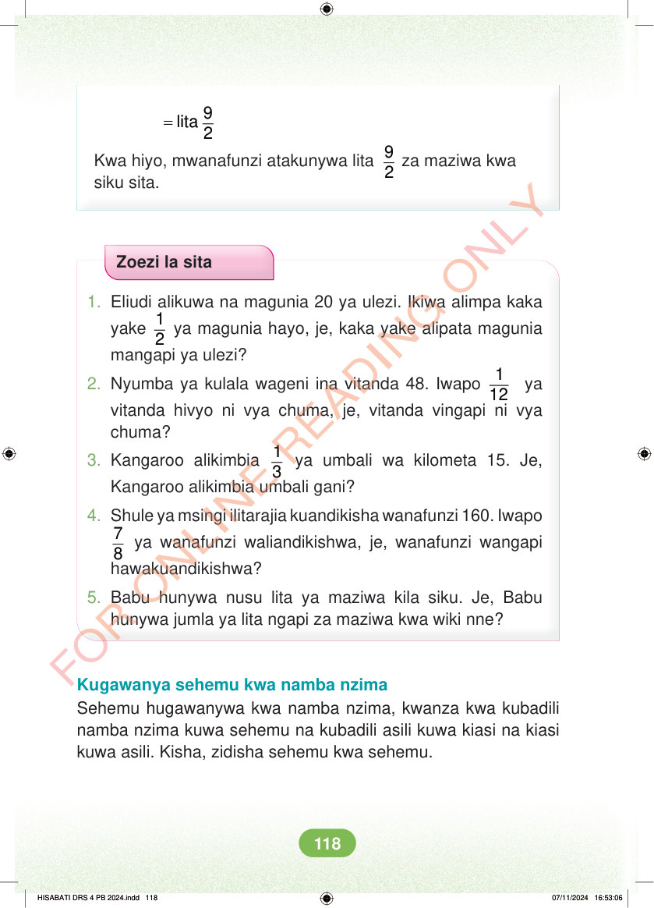

<!DOCTYPE html>
<html lang="sw-TZ"><head><meta charset="utf-8"><meta name="viewport" content="width=device-width,initial-scale=1">
<title>Hisabati: Kitabu cha Mwanafunzi Darasa la Nne</title>
<meta name="title-id" content="pg124_sec001"><meta name="page-section-id" content="130">
<link href="./content/tailwind_output.css" rel="stylesheet"><link href="./assets/libs/fontawesome/css/all.min.css" rel="stylesheet"><link href="./assets/fonts.css" rel="stylesheet">
<style>body{margin:0;background:#eef1ed}main{width:100%;display:flex;justify-content:center;padding:1rem 1rem 5rem;box-sizing:border-box}#content{width:100%;display:flex;justify-content:center}.pdf-page{position:relative;width:min(calc(100vw - 2rem),56rem);aspect-ratio:540.8980102539062/750.6610107421875;background:white;box-shadow:0 4px 24px #0002;overflow:hidden}.pdf-page img{position:absolute;inset:0;width:100%;height:100%;object-fit:fill}</style>
</head><body><main><h1 class="sr-only" id="page-heading">Ukurasa wa 124</h1><div id="content" class="opacity-0"><section role="article" data-section-type="pdf_accessible_page" data-section-id="pg124_sec001" aria-labelledby="page-heading" class="pdf-page"><p class="sr-only" data-id="pg124_gp001_tx001">= 9 lita 2 Kwa hiyo, mwanafunzi atakunywa lita 9 2 za maziwa kwa siku sita. Zoezi la sita 1. Eliudi alikuwa na magunia 20 ya ulezi. Ikiwa alimpa kaka yake 1 2 ya magunia hayo, je, kaka yake alipata magunia mangapi ya ulezi? 2. Nyumba ya kulala wageni ina vitanda 48. Iwapo 1 12 ya vitanda hivyo ni vya chuma, je, vitanda vingapi ni vya chuma? 3. Kangaroo alikimbia 1 3 ya umbali wa kilometa 15. Je, Kangaroo alikimbia umbali gani? 4. Shule ya msingi ilitarajia kuandikisha wanafunzi 160. Iwapo 7 8 ya wanafunzi waliandikishwa, je, wanafunzi wangapi hawakuandikishwa? 5. Babu hunywa nusu lita ya maziwa kila siku. Je, Babu hunywa jumla ya lita ngapi za maziwa kwa wiki nne? Kugawanya sehemu kwa namba nzima Sehemu hugawanywa kwa namba nzima, kwanza kwa kubadili namba nzima kuwa sehemu na kubadili asili kuwa kiasi na kiasi kuwa asili. Kisha, zidisha sehemu kwa sehemu. HISABATI DRS 4 PB 2024.indd 118 HISABATI DRS 4 PB 2024.indd 118 07/11/2024 16:53:06 07/11/2024 16:53:06</p></section></div></main><div class="relative z-50" id="interface-container"></div><div class="relative z-50" id="nav-container"></div><script src="./assets/offline-preloader.js?v=audiofix-20260824-1"></script><script src="./assets/scorm.js"></script><script src="./assets/base.bundle.local.js?v=audiofix-20260824-1"></script></body></html>